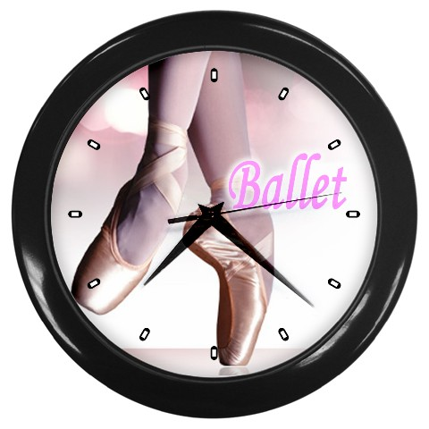

Rooster & Jaarplanning: 
dansrooster: vanaf 26 augustus 2024
Jaarplanning:
opstart week 23 maandag 26 augustus 2024
Open Dag zondag 1 september 2024
(Opening cultureel seizoen in samenwerking met Theater De KiK en muziekschool All Music.)
Paardenmarkt maandag 2 september 2024 (er zijn die dag geen lessen)
Sjors Sportief week 9 t/m 13 september 2024 (via Sjors Sportief doen kinderen uit omgeving proeflessen mee)
Herfstvakantie 21 t/m 25 oktober 2024 (in de vakantie zijn er geen lessen)
Kijk-lessen 2nog onbekend
(familie en vrienden kunnen een les komen bekijken)
Pakjesavond 5 december 2024 (vanaf 18:00 vervallen de lessen)
Kerstvakantie 23 december 2024 t/m 3 januari 2025
(in de vakantie zijn er geen lessen)
Verkleed lessen 24 t/ 28 februari 2025
(Kom verkleed naar de lessen deze week!)
Carnavalsvakantie 3 t/m 7 maart 2025
(in de vakantie zijn er geen lessen)
Vriendenlessen nog onbekend leerlingen mogen een vriend(in) meenemen naar de les om hen te laten ervaren hoe leuk dansen is!
Paasvakantie 21 april t/m 2 mei 2025
(in de vakantie zijn er geen lessen)
Hemelvaart donderdag 29 & vrijdag 30 mei 2025 (er zijn dan geen lessen)
2e Pinksterdag maandag 9 juni 2025 (dit is een vrije dag, er zijn geen lessen)
**Generale repetitie ** dinsdag 10 juni 2025
(va 15:00)
Voorstelling in Musis Sacrum Arnhem zaterdag 14 juni 2025 (hele dag)
Orientatie week 16 juni t/m 20 juni 2025
(Kinderen uit de K4 groepen (diploma groep) mogen in andere lessen orienteren welke dansstijl zij volgend seizoen willen kiezen)
Diploma lessen 23 juni t/m 27 juni 2025
(Oudste kleuters uit K1 en oudste kindergroep K4 ontvangen hun diploma's. Familie en vrienden mogen hierbij aanwezig zijn!)
Zomervakantie vanaf 30 juni 2025
(in de vakantie zijn er geen lessen)
! ( sommige vakanties/vrije dagen kunnen afwijken van de schoolvakanties)
Wijzigingen voorbehouden!